África
Algunos países pertenecienetes de África
Gambia
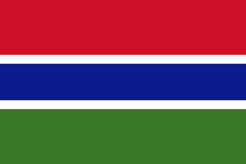Gambia es un pequeño país en África Occidental, rodeado por Senegal. Su capital es Banjul y es famoso por su cultura, playas y el río Gambia. También tiene sitios históricos como la isla Kunta Kinteh.
Liberia
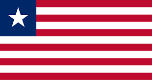Liberia es un país en África Occidental, con capital en Monrovia. Fundado por exesclavos afroamericanos, tiene una rica cultura y ha enfrentado guerras civiles en el pasado.
Madagascar
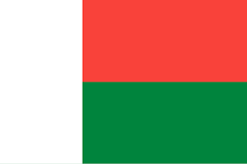Madagascar es una isla en el océano Índico, famosa por su biodiversidad única, como los lémures. Su capital es Antananarivo, y tiene una rica cultura y paisajes variados, desde selvas hasta playas.
Nigeria
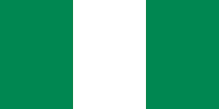Nigeria es el país más poblado de África, con capital en Abuya y Lagos como su ciudad más grande. Destaca por su diversidad cultural, economía basada en el petróleo y una vibrante escena musical, incluyendo el afrobeat.
Senegal
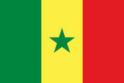Senegal es un país en África Occidental con capital en Dakar. Es conocido por su rica cultura, música como el mbalax y el Parque Nacional de Niokolo-Koba. La isla de Gorée es un importante sitio histórico relacionado con el comercio de esclavos.
Europa
Algunos países pertenecienetes de Europa.
Rusia
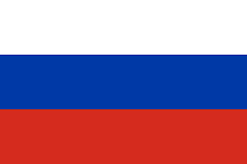Rusia es el país más grande del mundo, con Moscú como capital. Su idioma oficial es el ruso y es rico en cultura e historia. Destaca por su geografía diversa y recursos naturales.
España
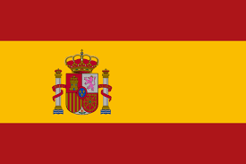Rusia es el país más grande del mundo, con Moscú como capital. España está en el suroeste de Europa, con Madrid como capital. Ambos tienen ricas culturas, pero sus idiomas oficiales son ruso y español.
Alemania

Alemania es un país en Europa Central, con Berlín como capital. Es conocida por su economía fuerte, cultura rica, y contribuciones en ciencia y tecnología. El idioma oficial es el alemán.
Italia
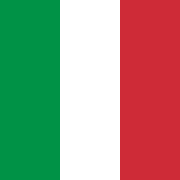Italia es un país en el sur de Europa, con Roma como capital. Es famosa por su historia, arte, y gastronomía. El idioma oficial es el italiano y es conocido por sus paisajes diversos, desde montañas hasta costas.
Suecia
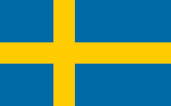Suecia es un país nórdico en Europa del Norte, con Estocolmo como capital. Es conocido por su bienestar social, naturaleza escénica y diseño. El idioma oficial es el sueco.
Oceanía
Oceanía incluye varios países y territorios. Algunos de los más destacados son:
Australia
Australia es un país y continente en el hemisferio sur, con Canberra como capital. Destaca por su diversidad natural, playas y fauna única. El idioma oficial es el inglés.
Nueva Zelanda
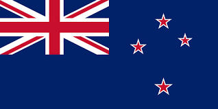Nueva Zelanda es un país insular en el océano Pacífico, con Wellington como capital. Es conocido por sus paisajes impresionantes, cultura maorí y actividades al aire libre. El idioma oficial es el inglés.
Fiyi
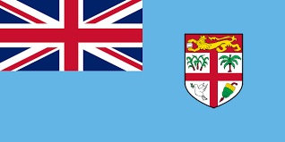Fiyi es un país insular en el océano Pacífico, conocido por sus playas de arena blanca, arrecifes de coral y cultura vibrante. Su capital es Suva, y el idioma oficial es el fiyiano y el inglés.
Tonga
Tonga es un archipiélago en el océano Pacífico, conocido por sus hermosas playas y rica cultura polinesia. Su capital es Nuku'alofa, y los idiomas oficiales son el tongano y el inglés.
Palau

Palau es un país insular en el océano Pacífico, conocido por sus impresionantes arrecifes de coral y biodiversidad marina. Su capital es Ngerulmud, y el idioma oficial es el palauano, aunque el inglés también se habla ampliamente.
y Papua Nueva Guinea
América
Algunos países pertenecienetes de América.
Colombia
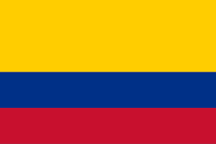Colombia es un país en América del Sur, con Bogotá como capital. Destaca por su diversidad cultural, paisajes variados y biodiversidad. El idioma oficial es el español, y es famoso por su café, música y patrimonio histórico.
Argentina
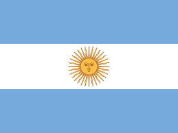Argentina es un país en el sur de América del Sur, con Buenos Aires como capital. Destaca por su diversidad geográfica, el tango y la gastronomía, especialmente el asado. El idioma oficial es el español.
Chile
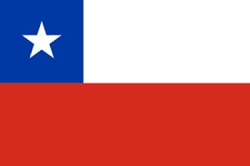Chile es un país en el suroeste de América del Sur, con Santiago como capital. Destaca por su geografía diversa, que incluye desiertos y montañas, y es famoso por su vino y paisajes naturales.
Brasil
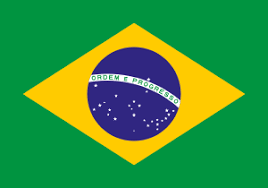Brasil es el país más grande de América del Sur, con Brasilia como capital. Es conocido por su diversidad cultural, el Carnaval, la samba y la Amazonía. El idioma oficial es el portugués.
Canadá
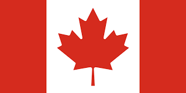Canadá es el segundo país más grande del mundo, ubicado en América del Norte, con Ottawa como capital. Es conocido por su diversidad cultural, paisajes naturales impresionantes y alta calidad de vida. Los idiomas oficiales son el inglés y el francés.
Algunos países pertenecienetes de Asia.
Afganistán
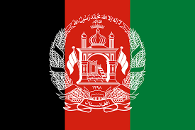Afganistán es un país en Asia Central, con Kabul como capital. Es montañoso y culturalmente diverso, con dari y pastún como idiomas oficiales. Ha enfrentado conflictos prolongados en su historia.
Arabia Saudita
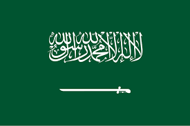Arabia Saudita es un país en la península arábiga, con Riad como capital. Es conocido por ser el lugar de nacimiento del islam y albergar lugares sagrados como La Meca y Medina. Su economía se basa en el petróleo, y el idioma oficial es el árabe.
Armenia
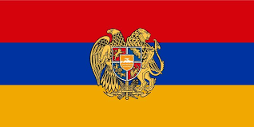Armenia es un país en el Cáucaso, con Ereván como capital. Es conocido por su rica historia, cultura y ser uno de los primeros países en adoptar el cristianismo. El idioma oficial es el armenio.
Corea del sur
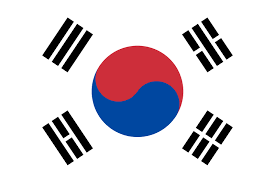Corea del Sur es un país en el este de Asia, con Seúl como capital. Es conocido por su tecnología avanzada, cultura pop (como el K-pop) y su economía dinámica. El idioma oficial es el coreano.
Corea del norte
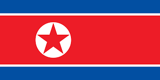Corea del Norte es un país en el este de Asia, con Pionyang como capital. Es conocido por su régimen autoritario, aislamiento internacional y desarrollo militar. El idioma oficial es el coreano.
Antártida
La Antártida no tiene países soberanos, pero varios países tienen reclamaciones territoriales y estaciones de investigación en el continente. Los principales países involucrados son:
Argentina
Argentina es un país en el sur de América del Sur, con Buenos Aires como capital. Destaca por su diversidad geográfica, el tango y la gastronomía, especialmente el asado. El idioma oficial es el español.
Chile
Chile es un país en el suroeste de América del Sur, con Santiago como capital. Destaca por su geografía diversa, que incluye desiertos y montañas, y es famoso por su vino y paisajes naturales.
Francia
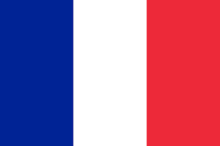Armenia es un país en el Cáucaso, con Ereván como capital. Es conocido por su rica historia, cultura y ser uno de los primeros países en adoptar el cristianismo. El idioma oficial es el armenio.
Reino unido
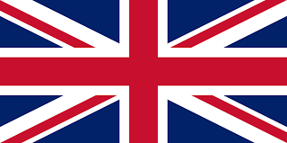Corea del Sur es un país en el este de Asia, con Seúl como capital. Es conocido por su tecnología avanzada, cultura pop (como el K-pop) y su economía dinámica. El idioma oficial es el coreano.
Australia
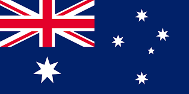Corea del Norte es un país en el este de Asia, con Pionyang como capital. Es conocido por su régimen autoritario, aislamiento internacional y desarrollo militar. El idioma oficial es el coreano.